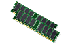
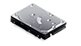
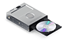
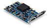
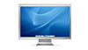
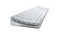

• Dual 2.5GHz PowerPC G5
• 512MB DDR SDRAM (PC3200)
• 160GB Serial ATA 7200rpm
• ATI Radeon 9600 XT w/128MB DDR SDRAM
• 8x SuperDrive (DVD-R/CD-RW)
• 56k V.92 modem
• Apple Keyboard & Mouse - U.S. English
• Mac OS X - U.S. English
Memory

With the 64-bit G5 processor, the Power
Mac G5 breaks the 4GB barrier. Power Mac G5 systems support up to 4GB or
8GB of DDR SDRAM depending on model selected. A fast 128-bit DDR memory
interface provides up to 6.4 GBps of memory throughput. Learn
more
Hard Drive
CD/DVD

The Power Mac G5 features next generation Serial ATA support with two
drive bays for up to 500GB of ultrafast storage. Learn more

Choose from the SuperDrive (now with 8x DVD write)
or Combo optical drive options to fit your needs. Learn more
Graphics

All cards include dual display support
and ship with a DVI to VGA adapter. NOTE: The ATI Radeon 9800 XT and NVIDIA
GeForce 6800 Ultra DDL reduces the number of available PCI or PCI-X slots
from three to two on the Power Mac G5. Learn more
Display
Secondary Display:

The 20-inch Apple Cinema Display and
the 23-inch and 30-inch Apple Cinema HD Displays feature an anodized aluminum
enclosure, FireWire and USB 2.0 ports and an industry standard DVI connector.
The 30-inch Apple Cinema HD Display requires the NVIDIA GeForce 6800 Ultra
DDL. Learn more
Keyboard & Mouse

Apple offers a standard wired Apple
Keyboard and Mouse with all Power Mac G5 models. Options include a wireless
bundle, which includes an Apple Wireless Keyboard, Apple Wireless Mouse,
and a built-in Bluetooth module. If desired, also choose a keyboard in other
languages offered. Learn more